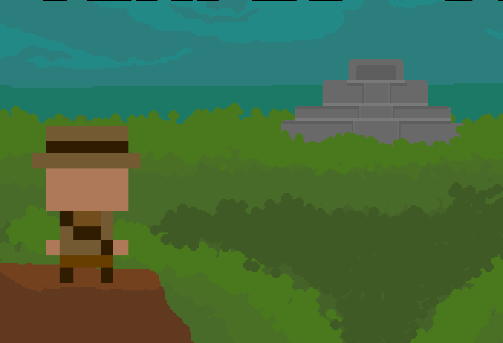
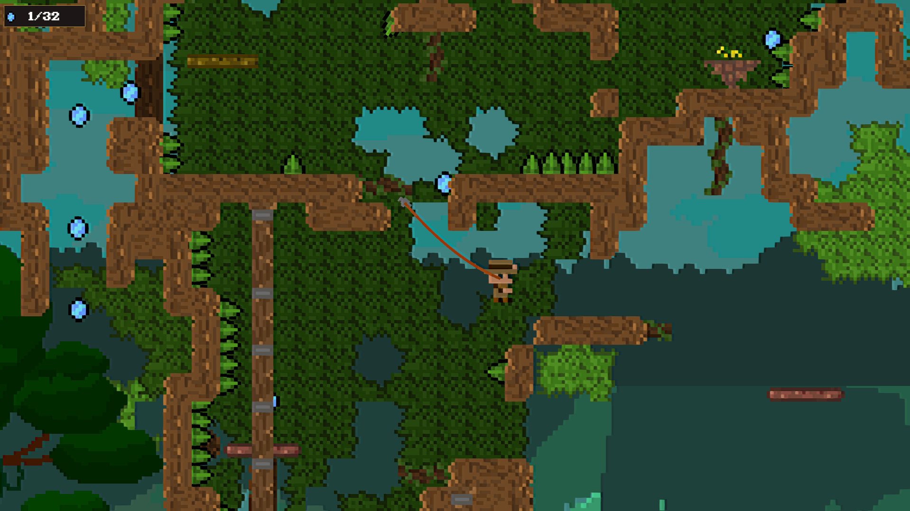
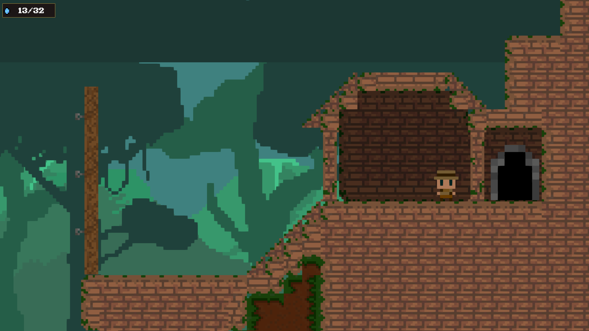
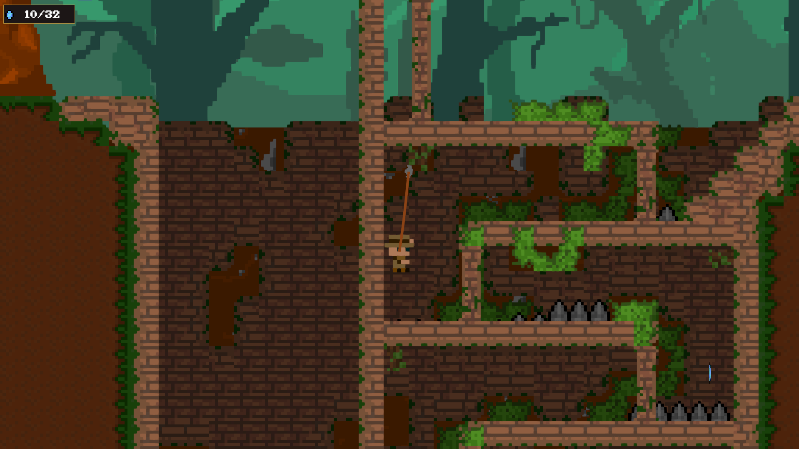
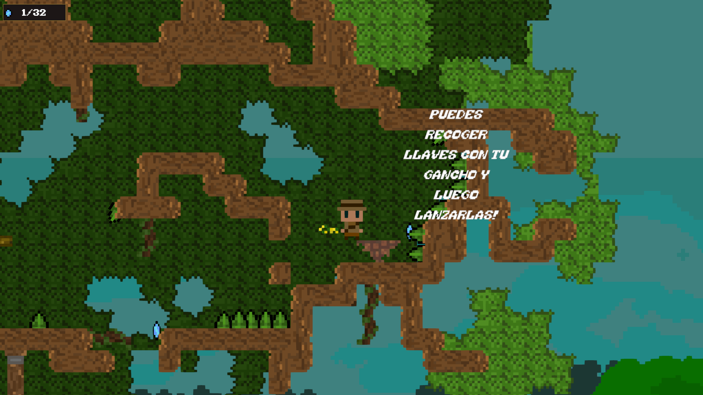

Un platformer 2D en pixel art donde explorás un templo antiguo con un gancho de agarre que se vuelve tu mejor amigo mientras te internás más profundo. Balanceate entre trampas letales, burlá a guardianes ancestrales y descubrí secretos. Cada salto, giro y suelta importa.

Templo Utaki gira alrededor de una mecánica de movimiento: el gancho de agarre. En vez de un platformer de saltos clásicos, el desafío está en encadenar balanceos con timing y leer el espacio para no caer en las trampas.
Toda la experiencia gira alrededor de balancearse. Cada nivel es una excusa para dominar el gancho un poco más.
Trampas letales y guardianes obligan a mantener el impulso. Frenar es peligroso; fluir es la recompensa.
El templo premia la curiosidad con secretos ocultos para quien se anima a desviarse del camino.
[Texto de tu aporte al equipo]




Platformer 2D en pixel art para Windows, desarrollado en Unity con C#. Sin uso de IA generativa.